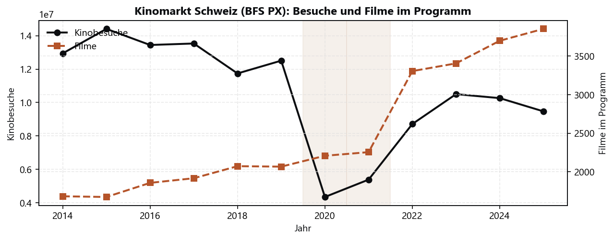
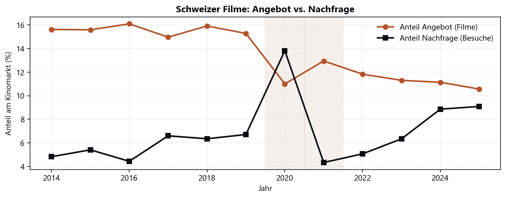
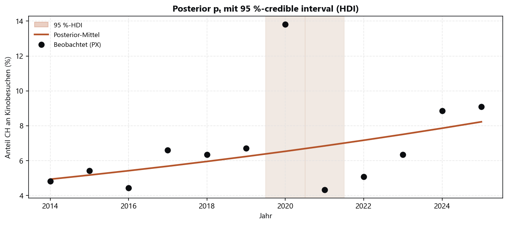
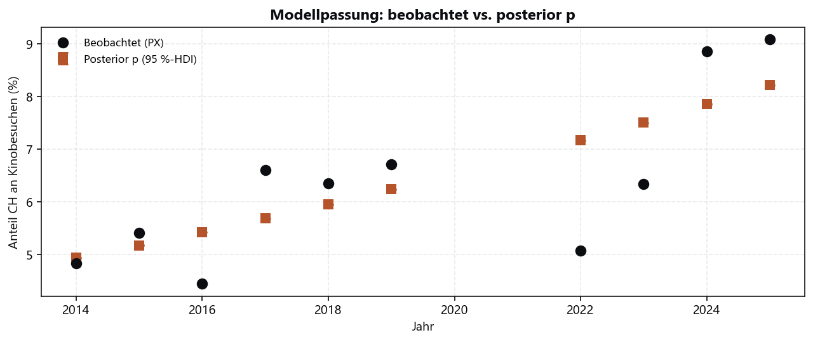
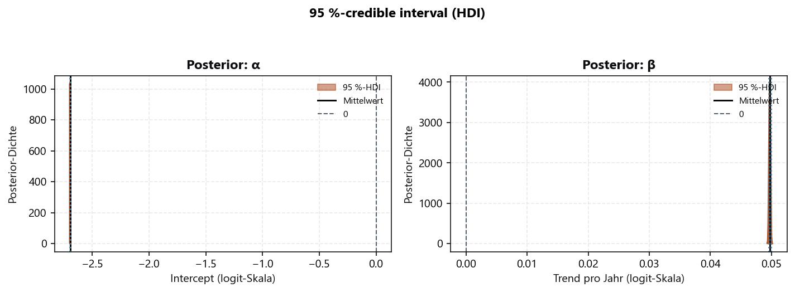
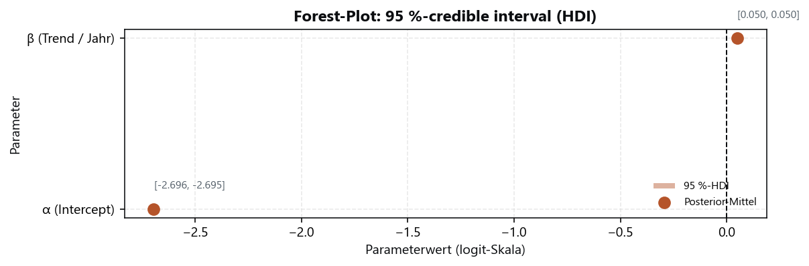
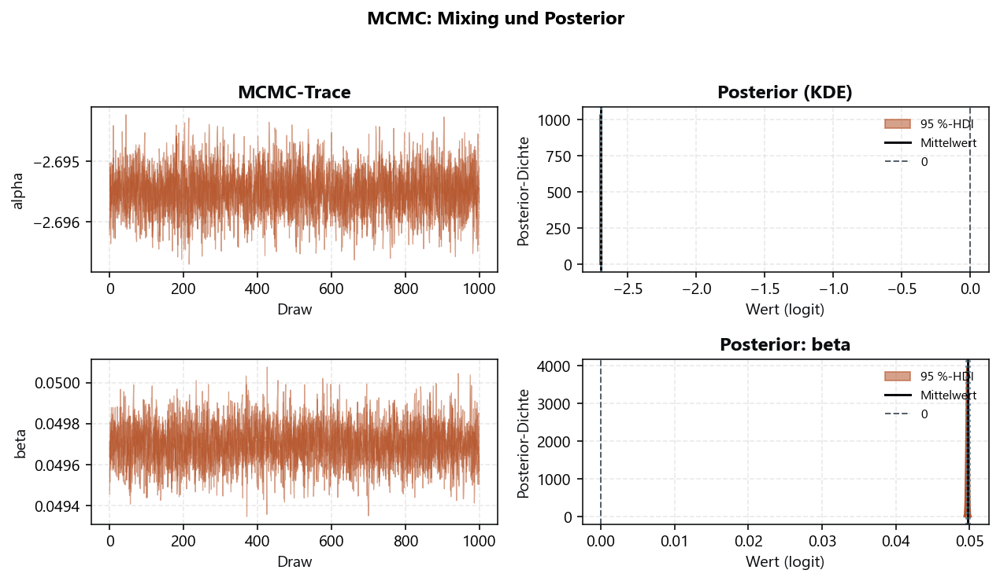
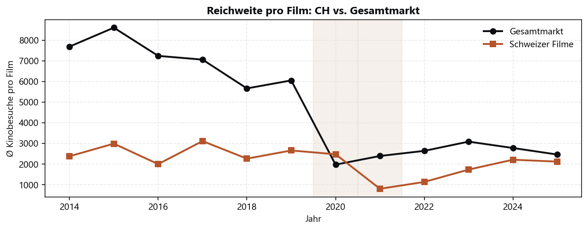
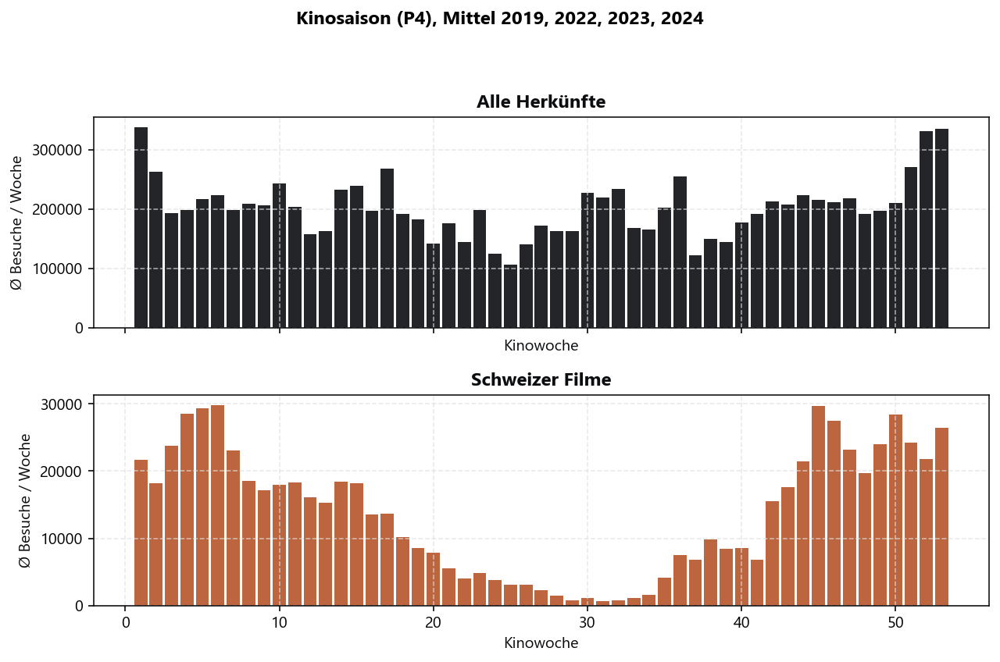

Kinomarkt: Besuche und Programmumfang
Fragestellung
Wie entwickeln sich Kinobesuche und Angebot am Schweizer Kinomarkt über die Jahre?
Daten
BFS «Filmangebot und Nachfrage» (PX), Sprachgebiet Schweiz, 2014–2025.
Methode
Jährliche Aggregation; Markt aus allen vorgeführten Filmen. Schattierung: Pandemiejahre 2020–2021.
Ergebnisse (Grafiken)

Ergebnisse & Interpretation
| Jahr | Besuche | Filme | Besuche/Film |
|---|---|---|---|
| 2014 | 12’940’965 | 1’683 | 7’689 |
| 2015 | 14’407’373 | 1’674 | 8’607 |
| 2016 | 13’443’890 | 1’857 | 7’240 |
| 2017 | 13’532’638 | 1’917 | 7’059 |
| 2018 | 11’740’410 | 2’073 | 5’663 |
| 2019 | 12’506’143 | 2’067 | 6’050 |
| 2020 | 4’348’555 | 2’208 | 1’969 |
| 2021 | 5’387’595 | 2’255 | 2’389 |
| 2022 | 8’713’836 | 3’305 | 2’637 |
| 2023 | 10’502’231 | 3’405 | 3’084 |
| 2024 | 10’264’111 | 3’698 | 2’776 |
| 2025 | 9’472’075 | 3’852 | 2’459 |
- Höchste Besuche vor der Pandemie: 14’407’373 (2015).
- Letztes Jahr (2025): 9’472’075 Besuche, 3’852 Filme.
- Filme im Programm wachsen im Mittel ~7.8 % pro Jahr (geometrisch über 2014–2025).
Grenzen
- Nur Kino (PX), kein VoD.
- 2025 kann als laufendes Jahr in der BFS-Quelle noch revidiert werden.
Schweizer Filme: Programmplatz vs. Publikum
Fragestellung
Kommen Schweizer Filme beim Publikum proportional zu ihrem Platz im Programm an?
Daten
BFS PX, Herkunft Schweiz vs. Gesamtmarkt.
Methode
Jährliche Anteile an gelisteten Filmen (Angebot) und Kinobesuchen (Nachfrage).
Ergebnisse (Grafiken)

Ergebnisse & Interpretation
| Jahr | Angebot | Nachfrage | Differenz (Pp.) |
|---|---|---|---|
| 2014 | 15,6 % | 4,8 % | +10,8 |
| 2015 | 15,6 % | 5,4 % | +10,2 |
| 2016 | 16,1 % | 4,4 % | +11,7 |
| 2017 | 15,0 % | 6,6 % | +8,4 |
| 2018 | 15,9 % | 6,4 % | +9,6 |
| 2019 | 15,3 % | 6,7 % | +8,6 |
| 2020 | 11,0 % | 13,8 % | -2,8 |
| 2021 | 12,9 % | 4,3 % | +8,6 |
| 2022 | 11,8 % | 5,1 % | +6,8 |
| 2023 | 11,3 % | 6,3 % | +5,0 |
| 2024 | 11,1 % | 8,9 % | +2,3 |
| 2025 | 10,6 % | 9,1 % | +1,5 |
- 2025: 10,6 % der Filme, aber nur 9,1 % der Besuche.
- Lücke Angebot–Nachfrage zuletzt: 1.5 Prozentpunkte (mehr Filme im Programm als Besuchsanteil).
- Seit 2022 liegt der Besuchsanteil höher als 2014–2019, der Angebotsanteil sinkt relativ.
Grenzen
- Anteile beziehen sich auf den PX-Kinomarkt, nicht auf einzelne Filme.
- Co-Produktionen und Herkunftsregeln folgen der BFS-Klassifikation.
Bayesianische Modellierung: Erfolg Schweizer Filme
Fragestellung
Steigt der Besuchsanteil Schweizer Filme am Kinomarkt über die Jahre — und wie sicher ist der Trend?
Daten
BFS PX, Schätzjahre: 2014, 2015, 2016, 2017, 2018, 2019, 2022, 2023, 2024, 2025 (ohne 2020–2021). Jahr̄ = 2019.
Modelldefinition
Hierarchisches Trendmodell für den CH-Besuchsanteil
- Likelihood
Besuche bei Schweizer Filmen yₜ ~ Binomial(Nₜ, pₜ)- Link
logit(pₜ) = α + β · (Jahrₜ − Jahr̄)- Priors
α ~ Normal(0, 1,5) — Basis auf logit-Skala (schwach informativ)β ~ Normal(0, 0,2) — jährlicher Trend (schwach informativ; Erwartung nahe 0)
Schätzung auf Jahren ohne starke Pandemie-Störung (2014–2019, 2022–2025). 2020–2021 werden in der Grafik markiert, fliessen aber nicht in die Schätzung ein. Unsicherheit: 95 %-credible interval (HDI) (ArviZ HDI, nicht gleichverteiltes Quantil).
Variablen
| Symbol | Name | Bedeutung |
|---|---|---|
| yₜ | CH-Kinobesuche | Beobachtete Besuche bei Schweizer Filmen im Jahr t (PX). |
| Nₜ | Gesamtbesuche | Alle Kinobesuche am Markt im Jahr t (Nenner). |
| pₜ | CH-Besuchsanteil | Latenter Anteil yₜ/Nₜ — «Erfolg» Schweizer Film am Kino. |
| α | Intercept | Logit-Anteil im Bezugsjahr (zentriert um Jahr̄). |
| β | Trend | Änderung des Logit-Anteils pro Jahr (positiv → steigender CH-Anteil). |
| Jahr̄ | Jahreszentrum | Mittelwert der Schätzjahre; macht β interpretierbar. |
Methode
Bayes (PyMC): Binomial-Likelihood, logit-Link, MCMC (NUTS), 4 Ketten × 1000 Draws. Unsicherheit: 95 %-credible interval (HDI); Richtung: Probability of Direction (Pd), nicht p-Wert.
MCMC-Konfiguration
- Sampler: NUTS
- Ketten: 4, Tune-in: 1000, Draws: 1000
- target_accept: 0.92
- Schätzjahre: 2014, 2015, 2016, 2017, 2018, 2019, 2022, 2023, 2024, 2025
- Jahr̄ (Zentrum): 2019
Ergebnisse (Grafiken)





Modellgüte (MCMC-Diagnostik)
Posterior & Interpretation
| Parameter | Bedeutung | Mittelwert | SD | 95 %-HDI | Pd |
|---|---|---|---|---|---|
| α | Intercept (logit) | -2,695 | 0,0004 | -2,696 – -2,695 | 0,0 % |
| β | Trend pro Jahr (logit) | 0,050 | 0,0001 | 0,050 – 0,050 | 100,0 % |
- β (Trend): Mittel 0.050, 95 %-HDI [0,050 – 0,050] (logit).
- Pd(β > 0) = 100,0 % — Probability of Direction.
- Posterior p (2025): 8,2 % [8,2 % – 8,2 %] (95 %-HDI).
- Modellpassung: Posterior p liegt nahe an den PX-Beobachtungen in den Schätzjahren.
Grenzen
- Erfolg = aggregierter Marktanteil, nicht Einzelfilm-Hit oder Qualität.
- Keine Genre- oder Saison-Kovariaten; Pandemiejahre ausgeschlossen.
- Pd ersetzt klassische Signifikanztests; bei kleinen Effekten trotz hoher Pd Vorsicht.
Besuche pro Film (Intensität)
Fragestellung
Erzielen Schweizer Filme pro Titel mehr oder weniger Besuche als der Markt?
Daten
BFS PX: Besuche / Anzahl Filme je Herkunft.
Methode
Intensität = Kinobesuche ÷ Filme im Programm (jährlich).
Ergebnisse (Grafiken)

Ergebnisse & Interpretation
- 2025: CH 2’116 vs. Markt 2’459 Besuche/Film (Faktor 0.86).
- In Pandemiejahren fallen beide Niveaus stark; CH 2021 besonders tief.
- Seit 2022 steigt die CH-Intensität wieder, bleibt meist unter dem Gesamtmarkt.
Grenzen
- Ein Film zählt einmal pro Jahr im Programm; Blockbuster und Langläufer werden nicht separat gewichtet.
Kinosaison nach Wochen (P4)
Fragestellung
Wann ist das Kino am vollsten — und folgen Schweizer Filme dem gleichen Muster?
Daten
BFS Kinostatistik P4, gemittelt über 2019, 2022, 2023, 2024. Pandemiejahre 2020, 2021 sind ausgeschlossen (Schliessungen, gestörtes Programm — kein typisches Saisonprofil).
Methode
Mittlere Besuche pro Kinowoche über die Basisjahre; CH-Filme separat (Herkunft och). Ziel: übliches Kalendermuster, nicht Krisenjahre.
Ergebnisse (Grafiken)

Ergebnisse & Interpretation
- Stärkste Woche gesamt: KW 1 (Dez), Ø 338’276 Besuche.
- Stärkste Woche CH: KW 6, Ø 29’850 Besuche.
- Hochphase Dezember/Jahreswechsel; Frühling (z. B. KW 17) zweiter Schwerpunkt.
Grenzen
- Kein Genre in P4; nur aggregierte Wochenprofile.
- 2020–2021 bewusst ausgeschlossen; 2022 ist erstes Nach-Pandemie-Jahr (leichte Restverzerrung möglich).
- Mittel über wenige Basisjahre — nicht jedes Kalenderjahr einzeln.